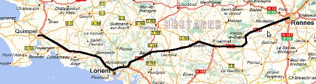

Европамоят континент
Автомобил: 610 km
Влак: 1124 km
Кораб: 42 km
Автомобил: 26819 km
Влак: 3972 km
Кораб: 928 km
Общо: 61134 km
Градове: 52
Държави: 20
Континенти: 2
Кемпер – културни останки от древна Бретания
До Кемпер пътувахме с влак, приятно и спокойно. Разгледахме центъра и се разходихме покрай реката. Времето беше мрачно и мъгливо, съвсем обичайно за тази част на Франция. Средновековните сгради се вписваха перфектното в сивотата на небето. През цялото време имаше малки капчици дъжд, а беше краят на август.

Рен - Кемпер
Катедралата на Кемпер се набива на очи, висока и строга, с прекрасни витражи от вътре. Хапнахме по сандвич, в едно кафе в центъра и потеглихме към възвишенията от където се откриваше чудесна панорама. Само да не беше толкоз мъгливо. Явно бяхме попаднали в елитен квартал, защото къщите бяха изключително добре поддържани. Даже се снимахме пред една от тях. Табелите навсякъде са двуезични – на френски и бретонски, явно в тази част на региона са останали последните представители на тази нация.
Градът ми хареса, но сивотата ми дойде малко в повече. Сега разбрах какво е това прословуто Английско време, макар и да се намирах във Франция.

Виж Галерията от Кемпер